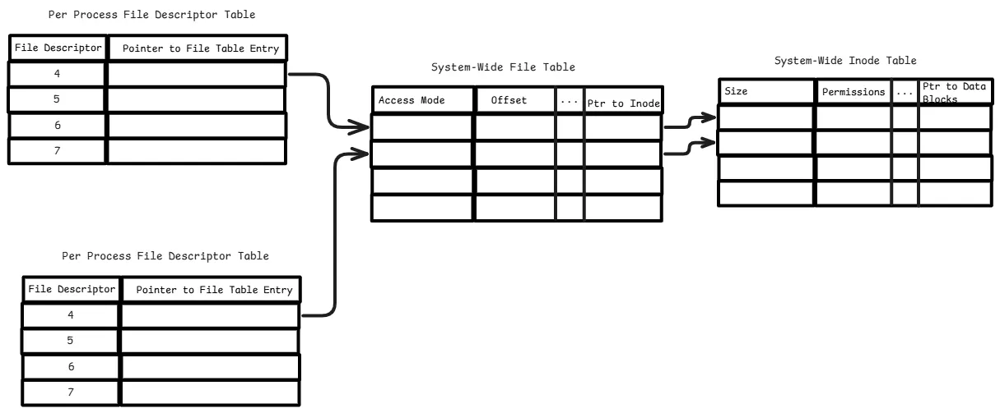
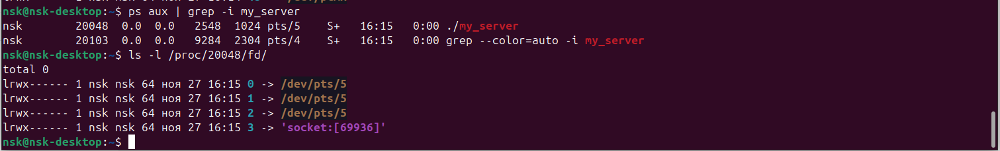
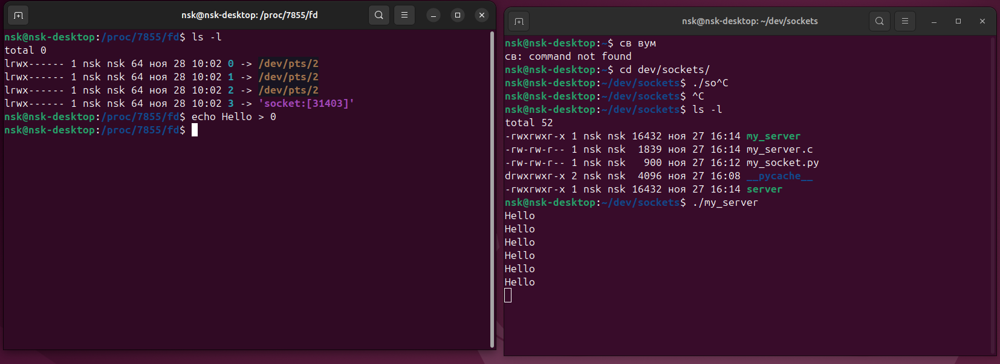

Файловый дескриптор
В Linux библиотека libc открывает для каждого запущенного приложения(процесса) 3 файл дескриптора, с номерами 0,1,2. Больше информации вы можете найти man stdio и man stdout
Файл дескриптор 0называетсяSTDINи ассоциируется с вводом данных у приложенияФайл дескриптор 1называетсяSTDOUTи используется приложениями для вывода данных, например командами printФайл дескриптор 2называетсяSTDERRи используется приложениями для вывода данных, сообщающих об ошибке
Файловые дескрипторы процесса
Каждый процесс в Unix/Linux имеет таблицу файловых дескрипторов, представляющую собой структуру, похожую на массив, в которой хранятся ссылки на файлы (файлы, сокеты и т. д.), открытые процессом. Эта таблица является локальной для процесса.
System File Table Системная таблица файлов — это структура данных ядра, которая содержит метаданные обо всех открытых файлах, включая информацию об их местоположении, режиме доступа, текущей позиции и т. д. Каждая запись в таблице файлов соответствует файловому дескриптору, предоставляя общую информацию для нескольких процессов.
File Offset: Current read/write position in the file.Access Mode: Read, write, or read-write mode (e.g., O_RDONLY, O_WRONLY).Pointer to Inode: Links the file table entry to the inode.Reference Count: Tracks how many file descriptors or processes share this entry.
System Inode Table
inode — это структура данных, которая содержит метаданные о файле, такие как его размер, разрешения, владелец, временные метки и указатели на блоки данных на диске.
Связь между Process FD table <–> System Table <–> Inode Table

/proc
В директории /proc содержатся виртуальные файлы. Эти файлы перечислены в списке, но не существуют на диске, операционная система создает их “на лету”, когда вы пытаетесь прочитать их.
Что внутри процесса?
Директории с номерными именами представляют все текущие процессы. Когда процесс заканчивается, его субдиректория в директории /proc автоматически исчезает. Если вы откроете эти директории, пока они еще существуют, внутри вы обнаружите множество файлов, таких как:
attr cpuset fdinfo mountstats stat
auxv cwd loginuid oom_adj statm
clear_refs environ maps oom_score status
cmdline exe mem root task
coredump_filter fd mounts smaps wchan
Наиболее важные файлы:
cmdline: Содержит команду, запустившую процесс, со всеми своими параметрами.cwd: Содержит симлинк на текущую работающую директорию (current working directory - CWD), ссылку на исполняемый файл процесса, и ссылку на его корневую директорию.environ: Содержит все переменные среды окружения для данного процесса.fd: Содержит все файловые дескрипторы для данного процесса, показывая, какие файлы или устройства процесс задействует.maps,statm, andmem: Относятся к памяти задействованной в процессе.statandstatus: Содержит информацию о статусе процесса.
Пример Запустив программу с инициализацией сокета (возвращаемое значение - идентификатор файлового дескриптора) можно наблюдать появление нового файлового дескриптора для данного сокета.

В данном случае скомпилированный бинарный файл имеет названиеmy_server.
Найти местоположение файловых дескрипторов для программы можно двумя командами:
ps aux | grep -i my_server # можно увидеть номер процесса вашей программы <my_server>
ls -l /proc/<номер процесса>/fd/
Попробуем следующий эксперимент:

Что такое /dev/pts?